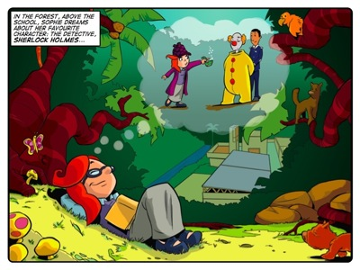
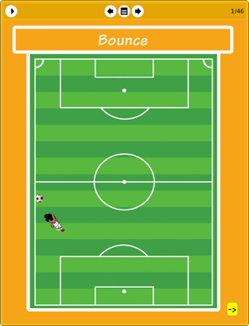

Story: Detective Sophie
Theme: The importance of asking questions.
Synopsis
In this story Sophie discovers a strange bird. After asking a string of questions about its appearance she deduces that, however improbable, it may be a dodo. When she turns her skill for asking questions to the suspicious characters who claim that they bird is theirs, she uncovers a fiendish plot and saves the day for Dr Roberts and his birds from the bird sanctuary.
Almost everything Sophie says in this story is a question. Her idol, Sherlock Holmes, was famous for making observations and using them to ask intelligent questions to solve his cases. This is the method Sophie uses to save the Dr Roberts' birds. It is also the method she uses throughout the story to find out information
Sophie knows what questions to ask to find out what type of bird Flim-Flam is (Can it fly? How much does it weigh? What colour is it? How tall is it?). The answers could prove or disprove her dodo hypothesis. But she is not asking these questions to find support for her theory. Like Sherlock Holmes, Sophie uses observations and questions about those observations to find the truth.
Activity: The Ball Experiment
The Ball Experiment is derived from asking a simple question: How many times does a ball bounce? This is something so apparently familiar that we almost feel as though we should be able to answer the question immediately. However, a little experimenting reveals that different balls bounce differently on different surfaces and there is no standard answer.
Although it is a relatively simple experiment, it does pose a couple of challenges. Firstly, bouncing and catching the ball at the right moment requires concentration and precision. And, secondly, accurately recording the height of each bounce requires focus. You have to take great care to get accurate results, which is true of all scientific endeavours, whether the experiment is as simple or whether it is complicated and delicate. Responding to these challenges is the main learning point of exercise.

The eToys project: Bounce
In this project learners follow Jojo’s instructions to make a ball bounce in eToys to match the bounce of a ball in reality. This is perhaps the best Kusasa eToys modelling project because:
- It entails an object like a ball which is familiar and interesting to learners.
- The purpose is to make the onscreen ball behave like a real ball.
- Learners can see for themselves that their analytical efforts are rewarded.
- Once learners have modelled the bounce, Jojo shows learners how to get the ball to leave a pen trail, which of course creates a series of diminishing parabolas.